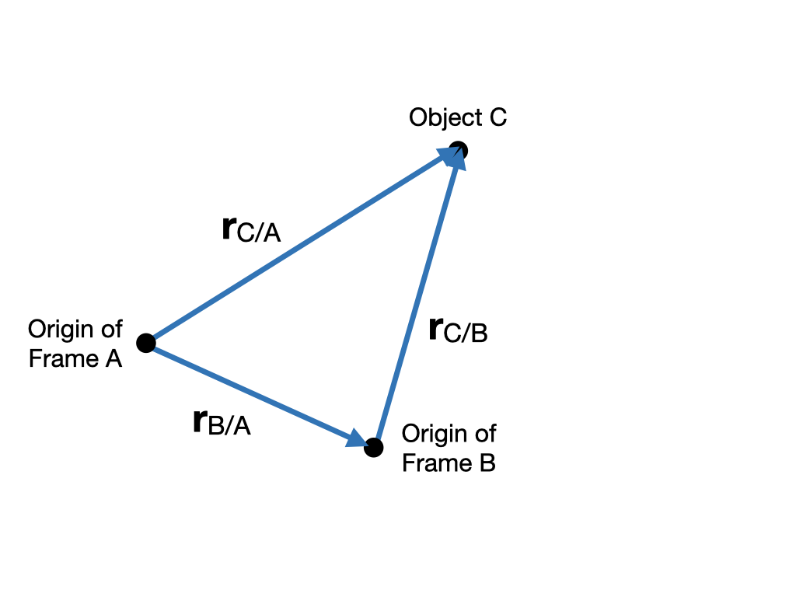
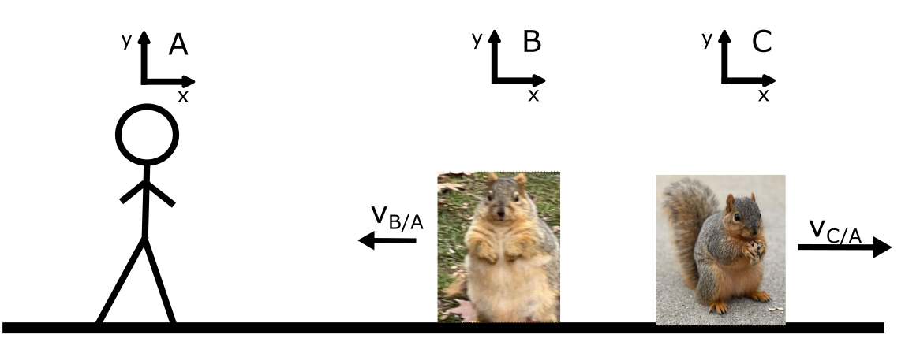

31 Aug 23 - Notes: Frames and Coordinates#
A Frame of Reference, Reference Frame, or simply Frame is a set of coordinates. These coordinates describe where things are. Sometimes it makes sense to choose different coordinates to describe the same situation. It is also important to recognize when to change coordinates to make a problem easier to work with. This will lead us to the concept of generalized coordinates, which are quite powerful in working with mechanical systems.
In physics, we often seek to work with a problem in the simplest way possible. That means we are typically looking to work with a problem in an inertial frame. Now, this is not always possible, consider systems that can flow and deform like in fluid mechanics or continuum mechanics. But, regardless, we should always know what frame we are working in.
An inertial frame is a reference frame where Newton’s First Law holds, which means that in this frame a net force of zero means an acceleration of zero. In practice, this means that if you have two frames that are moving at a constant velocity relative to each other (without rotation), these are inertial frames.
Video Reminder about Inertial Frames#
From Physics Professor Matt Anderson (6min 33s)
Non-Commercial Link: https://inv.tux.pizza/watch?v=WqWWM0673bk
Commercial Link: https://youtube.com/watch?v=WqWWM0673bk
Relative Velocities in Cartesian Coordinates#
Suppose you’re walking down Shaw Lane eager to get to BPS for your favorite physics class at constant velocity \(v_A\) when you notice a squirrel sitting stationary on the sidewalk \(d\) meters in front of you. Like an reasonable person, you naturally feel the urge to unnecessarily and mathematically analyze this situation using reference frames.
Let’s call your reference frame \(A\) and the squirrel’s \(B\). We’ll ignore height differences between you and the squirrel, which we assume are negligible given the amount of food our squirrels are consuming lately.
A note on notation: \(r_{A/B}\) means “the position of object \(A\) in frame \(B\),” or simply “the position of \(A\) relative to \(B\).”

Reminders about frames and linear frame changes#
What is the squirrel’s position in your frame, \(\mathbf{r}_{B/A}\)?
Answer
We have to select an origin, let’s choose ourselves. Then \(\mathbf{r}_{B/A} = d\;\hat{x}\).
What is your position in the squirrel’s frame, \(\mathbf{r}_{A/B}\)?
Answer
The squirrel is free to select itself as the origin. Then \(\mathbf{r}_{A/B} = -d\;\hat{x}\).
What is your velocity in your frame, \(\dot{\mathbf{r}}_{A/A} = \mathbf{v}_{A/A}\)?
Answer
The notation is a bit awkward to use, so we will often just drop the additional letter if we assume the velocity is in some obvious inertial frame. In this case we are comparing frames, so we won’t. Note in your own frame, you are not moving: \(\dot{\mathbf{r}}_{A/A} = \mathbf{v}_{A/A} = \mathbf{0}\).
What is the squirrel’s velocity in your frame, \(\mathbf{v}_{B/A}\)?
Answer
The squirrel in your frame is moving towards you. Again, we drop the additional letter if we understand the frame to be some obvious inertial frame: \(\mathbf{v}_{B/A} = -v_A\;\hat{x}\).
What is your velocity in the squirrel’s frame, \(\mathbf{v}_{B/A}\)?
Answer
In the squirrel’s frame, you are moving towards the squirrel. \(\mathbf{v}_{A/B} = v_A\;\hat{x}\).
Suppose that the squirrel starts walking to the right at the same velocity that you are walking at. What is \(\mathbf{v}_{B/A}\) now?
Answer
In the squirrel’s frame, you are now stationary, the distance between you and the squirrel remains constant. Thus, \(\mathbf{v}_{B/A} = \mathbf{0}\).
Hopefully these are intuitive from what you’ve learned back in introductory physics, but there are subtleties to the mathematics that you just did. These issues are incredibly important for working in other coordinate systems and do analysis between frames.
Is there a relationship between \(\mathbf{v}_{B/A}\) and \(\mathbf{v}_{A/B}\)?#
This is relatively simple to understand if we consider the position of one object (C) in two different frames (A and B). The location of object C in frame A is \(\mathbf{r}_{C/A}\) and in frame B is \(\mathbf{r}_{C/B}\). Note that these vectors point from the origin of the frame (A or B) to the position of the object (C). See below.
From this diagram it is clear that we can write the following relationship between the position vectors:
In words this states, if we measure the distance vector from A to C, then that is the same as adding the distance vectors that measure from A to B and then B to C. This distance concept holds in any coordinate system and even where the concept of coordinates is more abstract. We can define relationships between locations in real (and imagined) spaces using vectors.
What about the velocities?#
Here we have to be a bit more careful. Normally, you would think we can simply take derivatives like this:
Careful!
You can only do this sometimes!
This derivative works out so simply only because the unit vectors are fixed in Cartesian Coordinates. That is the Chain rule works out nicely. This is not true in other coordinate systems.
If we write a generic vector in one of these frames as:
Then take a time derivative, we simply get
because the derivatives of the unit vectors vanish. Later, we’ll figure out what happens when you have non-constant unit vectors.
Example#
Let’s use these transformations in a problem.
A second squirrel appears, which we’ll call squirrel \(C\). This scares the first squirrel into running toward you (\(\mathbf{v}_{B/A}\)), while the new squirrel runs away (\(\mathbf{v}_{C/A}\)).
Consider the following question:
What is the velocity of squirrel \(B\) relative to squirrel \(C\)?
Answer
We can draw the a diagram to help us to show that the relative positions will be:
and thus,
Because all the measurements are in Cartesian coordinates, we can take the time derivative of both sides to get:
The Galilean Transformation#
We just did an example of a Galilean Transformation. Traditionally, if we have a frame \(B\) that with moves with constant velocity \(v_{B/A}\) with respect to frame \(A\), we re-write the above equations as the following:
Where we have taken \(_A\) to mean \(_{C/A}\) and \(_B\) to mean \(_{C/B}\). Also note that since we are ignoring relativistic effects, we also have that: